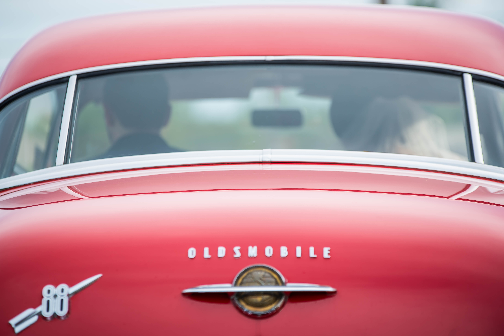

Welcome Everyone!
Welcome everyone to my simple website made from scratch. This website is made for my Writing on the Web class taken in the fall semester of 2020. In this site you will find my semester reflection for the class, as well as a page dedicated to the building of my custom PC.
